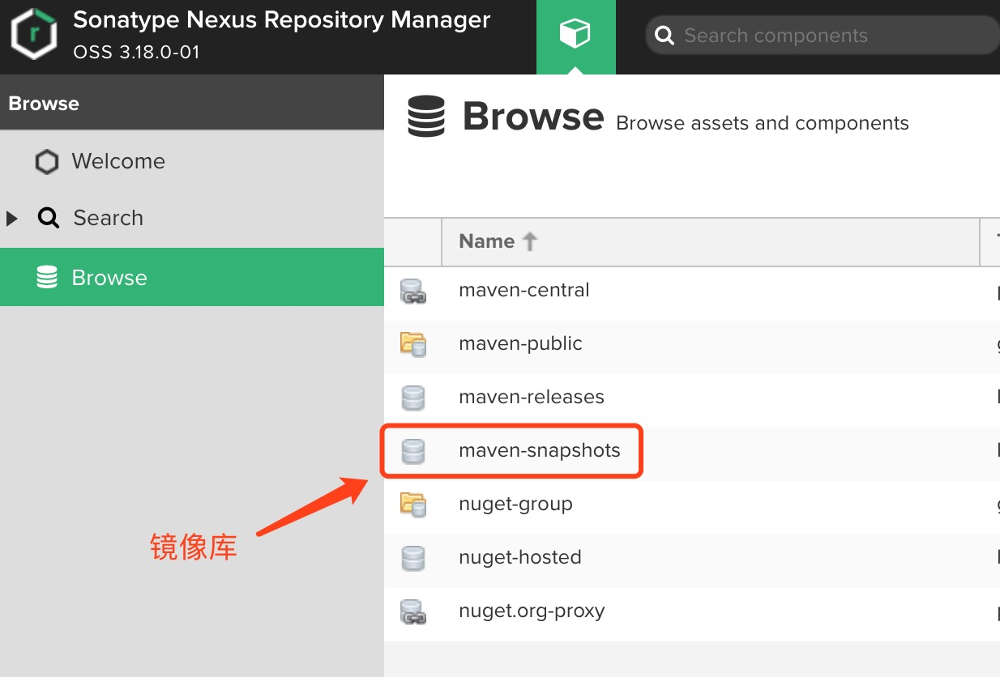
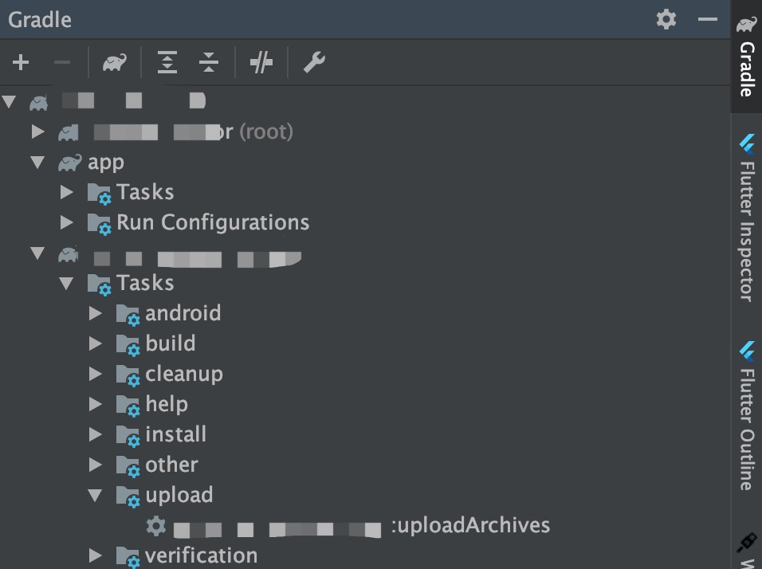

根据面向对象设计语言的可复用原则，我们会将通用性高的代码抽取出来整合到一个Library中，往往这类代码不会经常改变，如果用依赖Module的方法直接使用的话，每次运行时IDE会重新编译该Module，即使Android Studio已经做了很多优化，但在大项目中还是经常会增加很多编译时间。为了节省这些时间，一个简便的方法是使用编译好的aar文件，而为了管理aar，我们可以将aar文件上传到一个公共仓库中，比如JCenter，如果是公司内部项目的话，则会搭建一个私有maven服务来管理。
使用Sonatypec的Nexus搭建Maven私有仓库
略
编写gradle脚本执行打包上传aar
仓库搭建好后，我们已经拿到了用户名和密码，接下来使用gradle脚本实现打包和上传。
1 2 3 4 5 6 7 8 9 10 11 12 13 14 15 16 17 18 19 20 21 22 23 24 25 26 27 28 29 30 31 32 33 34 35 36 37 38 39 40 41 42 43 44 45 46 47 48 49 50 51 52 53 54 55 56 57 58 59 60 61 62
| apply plugin: 'maven' def repositoryUrl if (isReleaseBuild()) { println 'Release Build' repositoryUrl = "http://xxx/repository/maven-releases/" } else { println 'Debug Build' repositoryUrl = "http://xxx/repository/maven-snapshots/" } def getRepositoryUserName() { return hasProperty('NEXUS_USERNAME') ? NEXUS_USERNAME : "" } def getRepositoryPassword() { return hasProperty('NEXUS_PASSWORD') ? NEXUS_PASSWORD : "" } def isReleaseBuild() { return !VERSION_NAME.contains("SNAPSHOT") } afterEvaluate { project -> uploadArchives { repositories { mavenDeployer { pom.artifactId = POM_ARTIFACT_ID pom.groupId = POM_GROUP_ID pom.version = VERSION_NAME repository(url: repositoryUrl) { authentication(userName: getRepositoryUserName(), password: getRepositoryPassword()) } pom.project { name POM_NAME packaging POM_PACKAGING description POM_DESCRIPTION } } } } }
|
在Library的开发过程中，会多次打包测试版本，为了不在每次打包时都增加版本号，我们可以使用Maven仓库中的镜像目录，如下图：

将上传的url尾部设置为maven-snapshots/即可上传到该目录下，这样在每次打包时会根据打包时间增加一个新包，另，项目的app的build.gradle中可设置检查远程仓库是否更新的时间间隔，在编译/运行时会自动去下载新包：
1 2 3 4 5 6 7 8 9 10
| android { ... configurations.all { resolutionStrategy.cacheChangingModulesFor 1, 'minutes' resolutionStrategy.cacheDynamicVersionsFor 1, 'minutes' } }
|
如果url尾部设置的是maven-releases/，则会上传到release目录下。
脚本中根据版本名是否包含SNAPSHOT来判断是否打正式包，还有其他参数使用到的可配置项在module的gradle.properties中，具体内容如下：
1 2 3 4 5 6 7 8 9 10 11 12 13 14 15 16 17 18
| NEXUS_USERNAME=name NEXUS_PASSWORD=password POM_NAME=library name POM_GROUP_ID=groupid POM_ARTIFACT_ID=artifactid VERSION_NAME=1.0.0 POM_PACKAGING=aar POM_DESCRIPTION=description
|
在一切准备就绪后，可在Android Studio的右侧点击Gradle选项卡，找到对应Library的下的upload目录，双击这个任务就可打包上传：

使用已上传的aar
为了检验是否已经上传成功，首先可以打开maven后台查看是否有对应版本的文件，然后在项目的build.gradle中添加这个仓库的url：
1 2 3 4 5 6
| allprojects { repositories { ... maven { url 'http://xxx/repository/maven-public/' } } }
|
不管在maven-releases还是maven-snapshots目录，我们上传的包都会在maven-public目录下出现，所以在使用时只要配置这个目录即可。
然后在app的build.gradle中：
1 2 3 4
| dependencies { ... implementation 'groupid:artifactid:1.0.0' }
|
常见问题
暂无。